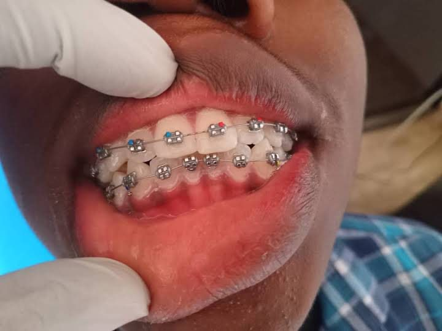

About orthodontic treatment
Orthodontic treatment is the branch of dentistry that moves teeth into better positions. It can improve crowded, crooked or widely spaced teeth, and can help the upper and lower teeth to meet more comfortably.
The most familiar orthodontic appliance is braces, which use gentle, continuous pressure over time to guide teeth to where they should be. Straight teeth are not only about looks: they can also be easier to clean.

What it involves
- An initial assessment of your teeth, jaws and bite, including what you want to change.
- A treatment plan explaining the appliance, the likely duration and how often you will visit.
- Fitting of the appliance, such as fixed braces, with instructions on how to look after it.
- Regular review appointments to check progress and adjust the appliance.
- Retention at the end of treatment so that teeth stay in their new positions.
Benefits
- Can straighten crowded or crooked teeth and close gaps.
- Can improve how the upper and lower teeth fit together.
- Straighter teeth are generally easier to brush and clean between.
- Can boost self-confidence during treatment and after it.
- Planned step by step, with progress reviewed at follow-up visits.
What patients can expect
- Treatment takes time. The length depends on how far the teeth have to move.
- Teeth can feel sore for a few days after fitting and after adjustments.
- Brushing carefully around braces matters even more, because food and plaque collect around the brackets.
- You may need to avoid very hard or sticky foods while wearing braces.
- Wearing a retainer afterwards, as advised, helps to keep your result.
Who it may be suitable for
- Teenagers and adults with crowded, crooked or protruding teeth.
- People with gaps between their teeth that they would like to close.
- People whose upper and lower teeth do not meet comfortably.
- Anyone who wants to know whether braces would suit them.
Why professional care matters
Moving teeth changes the way the whole bite works, and the gums and the roots need to stay healthy while the teeth move. Professional assessment and regular reviews make sure the appliance is doing its job safely, and that your teeth are staying healthy throughout treatment.
This page is general information to help you understand the treatment. Results vary between patients, and only a dentist can advise what is right for you after examining your teeth.
Frequently asked questions
How long will I need to wear braces?
It varies widely. Your dentist can estimate the length of treatment after examining your teeth and bite, and will review the timeline at your follow-up visits.
Do braces hurt?
Braces usually cause mild soreness for a few days after they are fitted or adjusted. This is normal and generally eases with soft foods. Contact the clinic if you have sharp pain or a broken bracket.
Can adults have orthodontic treatment?
Yes. As long as your teeth and gums are healthy, adults can have orthodontic treatment. Your dentist will assess whether it suits you.
How do I clean my teeth with braces?
Brush after meals, pay attention to the area around each bracket and the gum line, and clean between teeth with interdental brushes or floss threaders as shown by your dentist.
Do I have to wear a retainer afterwards?
Usually yes. Teeth tend to move back toward their original position, so a retainer helps to keep them where they are. Your dentist will explain how long to wear it.